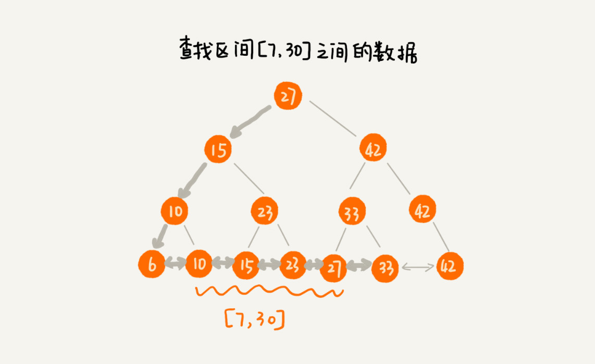
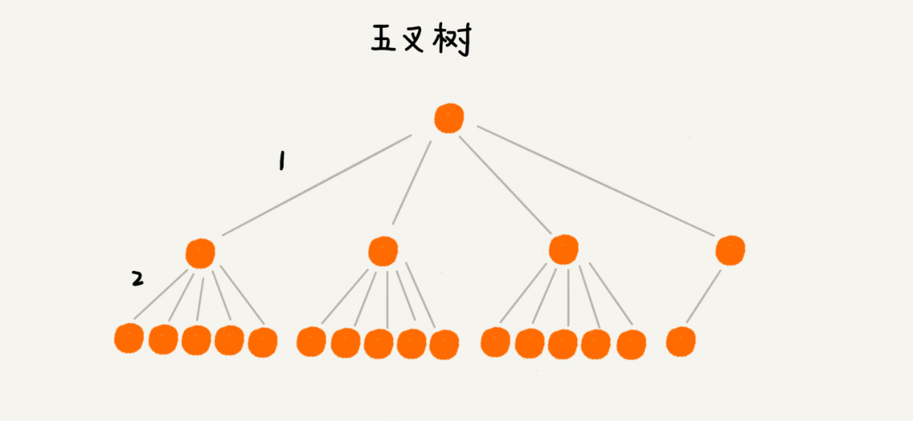

48 | B+树：MySQL数据库索引是如何实现的？
作为一个软件开发工程师，你对数据库肯定再熟悉不过了。作为主流的数据存储系统，它在我们的业务开发中，有着举足轻重的地位。在工作中，为了加速数据库中数据的查找速度，我们常用的处理思路是，对表中数据创建索引。那你是否思考过，数据库索引是如何实现的呢？底层使用的是什么数据结构和算法呢？
算法解析
思考的过程比结论更重要。跟着我学习了这么多节课，很多同学已经意识到这一点，比如 Jerry 银银同学。我感到很开心。所以，今天的讲解，我会尽量还原这个解决方案的思考过程，让你知其然，并且知其所以然。
1. 解决问题的前提是定义清楚问题
如何定义清楚问题呢？除了对问题进行详细的调研，还有一个办法，那就是，通过对一些模糊的需求进行假设，来限定要解决的问题的范围。
如果你对数据库的操作非常了解，针对我们现在这个问题，你就能把索引的需求定义得非常清楚。但是，对于大部分软件工程师来说，我们可能只了解一小部分常用的 SQL 语句，所以，这里我们假设要解决的问题，只包含这样两个常用的需求：
- 根据某个值查找数据，比如 select * from user where id=1234；
- 根据区间值来查找某些数据，比如 select * from user where id > 1234 and id < 2345。
除了这些功能性需求之外，这种问题往往还会涉及一些非功能性需求，比如安全、性能、用户体验等等。限于专栏要讨论的主要是数据结构和算法，对于非功能性需求，我们着重考虑性能方面的需求。性能方面的需求，我们主要考察时间和空间两方面，也就是执行效率和存储空间。
在执行效率方面，我们希望通过索引，查询数据的效率尽可能的高；在存储空间方面，我们希望索引不要消耗太多的内存空间。
2. 尝试用学过的数据结构解决这个问题
问题的需求大致定义清楚了，我们现在回想一下，能否利用已经学习过的数据结构解决这个问题呢？支持快速查询、插入等操作的动态数据结构，我们已经学习过散列表、平衡二叉查找树、跳表。
我们先来看散列表。散列表的查询性能很好，时间复杂度是 O(1)。但是，散列表不能支持按照区间快速查找数据。所以，散列表不能满足我们的需求。
我们再来看平衡二叉查找树。尽管平衡二叉查找树查询的性能也很高，时间复杂度是 O(logn)。而且，对树进行中序遍历，我们还可以得到一个从小到大有序的数据序列，但这仍然不足以支持按照区间快速查找数据。
我们再来看跳表。跳表是在链表之上加上多层索引构成的。它支持快速地插入、查找、删除数据，对应的时间复杂度是 O(logn)。并且，跳表也支持按照区间快速地查找数据。我们只需要定位到区间起点值对应在链表中的结点，然后从这个结点开始，顺序遍历链表，直到区间终点对应的结点为止，这期间遍历得到的数据就是满足区间值的数据。

这样看来，跳表是可以解决这个问题。实际上，数据库索引所用到的数据结构跟跳表非常相似，叫作 B+ 树。不过，它是通过二叉查找树演化过来的，而非跳表。为了给你还原发明 B+ 树的整个思考过程，所以，接下来，我还再从二叉查找树讲起，看它是如何一步一步被改造成 B+ 树的。
3. 改造二叉查找树来解决这个问题
为了让二叉查找树支持按照区间来查找数据，我们可以对它进行这样的改造：树中的节点并不存储数据本身，而是只是作为索引。除此之外，我们把每个叶子节点串在一条链表上，链表中的数据是从小到大有序的。经过改造之后的二叉树，就像图中这样，看起来是不是很像跳表呢？

改造之后，如果我们要求某个区间的数据。我们只需要拿区间的起始值，在树中进行查找，当查找到某个叶子节点之后，我们再顺着链表往后遍历，直到链表中的结点数据值大于区间的终止值为止。所有遍历到的数据，就是符合区间值的所有数据。

但是，我们要为几千万、上亿的数据构建索引，如果将索引存储在内存中，尽管内存访问的速度非常快，查询的效率非常高，但是，占用的内存会非常多。
比如，我们给一亿个数据构建二叉查找树索引，那索引中会包含大约 1 亿个节点，每个节点假设占用 16 个字节，那就需要大约 1GB 的内存空间。给一张表建立索引，我们需要 1GB 的内存空间。如果我们要给 10 张表建立索引，那对内存的需求是无法满足的。如何解决这个索引占用太多内存的问题呢？
我们可以借助时间换空间的思路，把索引存储在硬盘中，而非内存中。我们都知道，硬盘是一个非常慢速的存储设备。通常内存的访问速度是纳秒级别的，而磁盘访问的速度是毫秒级别的。读取同样大小的数据，从磁盘中读取花费的时间，是从内存中读取所花费时间的上万倍，甚至几十万倍。
这种将索引存储在硬盘中的方案，尽管减少了内存消耗，但是在数据查找的过程中，需要读取磁盘中的索引，因此数据查询效率就相应降低很多。
二叉查找树，经过改造之后，支持区间查找的功能就实现了。不过，为了节省内存，如果把树存储在硬盘中，那么每个节点的读取（或者访问），都对应一次磁盘 IO 操作。树的高度就等于每次查询数据时磁盘 IO 操作的次数。
我们前面讲到，比起内存读写操作，磁盘 IO 操作非常耗时，所以我们优化的重点就是尽量减少磁盘 IO 操作，也就是，尽量降低树的高度。那如何降低树的高度呢？
我们来看下，如果我们把索引构建成 m 叉树，高度是不是比二叉树要小呢？如图所示，给 16 个数据构建二叉树索引，树的高度是 4，查找一个数据，就需要 4 个磁盘 IO 操作（如果根节点存储在内存中，其他结点存储在磁盘中），如果对 16 个数据构建五叉树索引，那高度只有 2，查找一个数据，对应只需要 2 次磁盘操作。如果 m 叉树中的 m 是 100，那对一亿个数据构建索引，树的高度也只是 3，最多只要 3 次磁盘 IO 就能获取到数据。磁盘 IO 变少了，查找数据的效率也就提高了。

如果我们将 m 叉树实现 B+ 树索引，用代码实现出来，就是下面这个样子（假设我们给 int 类型的数据库字段添加索引，所以代码中的 keywords 是 int 类型的）：
/**
* 这是 B+ 树非叶子节点的定义。
*
* 假设 keywords=[3, 5, 8, 10]
* 4 个键值将数据分为 5 个区间：(-INF,3), [3,5), [5,8), [8,10), [10,INF)
* 5 个区间分别对应：children[0]...children[4]
*
* m 值是事先计算得到的，计算的依据是让所有信息的大小正好等于页的大小：
* PAGE_SIZE = (m-1)*4[keywordss 大小]+m*8[children 大小]
*/
public class BPlusTreeNode {
public static int m = 5; // 5 叉树
public int[] keywords = new int[m-1]; // 键值，用来划分数据区间
public BPlusTreeNode[] children = new BPlusTreeNode[m];// 保存子节点指针
}
/**
* 这是 B+ 树中叶子节点的定义。
*
* B+ 树中的叶子节点跟内部结点是不一样的,
* 叶子节点存储的是值，而非区间。
* 这个定义里，每个叶子节点存储 3 个数据行的键值及地址信息。
*
* k 值是事先计算得到的，计算的依据是让所有信息的大小正好等于页的大小：
* PAGE_SIZE = k*4[keyw.. 大小]+k*8[dataAd.. 大小]+8[prev 大小]+8[next 大小]
*/
public class BPlusTreeLeafNode {
public static int k = 3;
public int[] keywords = new int[k]; // 数据的键值
public long[] dataAddress = new long[k]; // 数据地址
public BPlusTreeLeafNode prev; // 这个结点在链表中的前驱结点
public BPlusTreeLeafNode next; // 这个结点在链表中的后继结点
}
我稍微解释一下这段代码。
对于相同个数的数据构建 m 叉树索引，m 叉树中的 m 越大，那树的高度就越小，那 m 叉树中的 m 是不是越大越好呢？到底多大才最合适呢？
不管是内存中的数据，还是磁盘中的数据，操作系统都是按页（一页大小通常是 4KB，这个值可以通过 getconfig PAGE_SIZE 命令查看）来读取的，一次会读一页的数据。如果要读取的数据量超过一页的大小，就会触发多次 IO 操作。所以，我们在选择 m 大小的时候，要尽量让每个节点的大小等于一个页的大小。读取一个节点，只需要一次磁盘 IO 操作。

尽管索引可以提高数据库的查询效率，但是，作为一名开发工程师，你应该也知道，索引有利也有弊，它也会让写入数据的效率下降。这是为什么呢？
数据的写入过程，会涉及索引的更新，这是索引导致写入变慢的主要原因。
对于一个 B+ 树来说，m 值是根据页的大小事先计算好的，也就是说，每个节点最多只能有 m 个子节点。在往数据库中写入数据的过程中，这样就有可能使索引中某些节点的子节点个数超过 m，这个节点的大小超过了一个页的大小，读取这样一个节点，就会导致多次磁盘 IO 操作。我们该如何解决这个问题呢？
实际上，处理思路并不复杂。我们只需要将这个节点分裂成两个节点。但是，节点分裂之后，其上层父节点的子节点个数就有可能超过 m 个。不过这也没关系，我们可以用同样的方法，将父节点也分裂成两个节点。这种级联反应会从下往上，一直影响到根节点。这个分裂过程，你可以结合着下面这个图一块看，会更容易理解（图中的 B+ 树是一个三叉树。我们限定叶子节点中，数据的个数超过 2 个就分裂节点；非叶子节点中，子节点的个数超过 3 个就分裂节点）。

正是因为要时刻保证 B+ 树索引是一个 m 叉树，所以，索引的存在会导致数据库写入的速度降低。实际上，不光写入数据会变慢，删除数据也会变慢。这是为什么呢？
我们在删除某个数据的时候，也要对应的更新索引节点。这个处理思路有点类似跳表中删除数据的处理思路。频繁的数据删除，就会导致某些结点中，子节点的个数变得非常少，长此以往，如果每个节点的子节点都比较少，势必会影响索引的效率。
我们可以设置一个阈值。在 B+ 树中，这个阈值等于 m/2。如果某个节点的子节点个数小于 m/2，我们就将它跟相邻的兄弟节点合并。不过，合并之后结点的子节点个数有可能会超过 m。针对这种情况，我们可以借助插入数据时候的处理方法，再分裂节点。
文字描述不是很直观，我举了一个删除操作的例子，你可以对比着看下（图中的 B+ 树是一个五叉树。我们限定叶子节点中，数据的个数少于 2 个就合并节点；非叶子节点中，子节点的个数少于 3 个就合并节点。）。

数据库索引以及 B+ 树的由来，到此就讲完了。你有没有发现，B+ 树的结构和操作，跟跳表非常类似。理论上讲，对跳表稍加改造，也可以替代 B+ 树，作为数据库的索引实现的。
B+ 树发明于 1972 年，跳表发明于 1989 年，我们可以大胆猜想下，跳表的作者有可能就是受了 B+ 树的启发，才发明出跳表来的。不过，这个也无从考证了。
总结引申
今天，我们讲解了数据库索引实现，依赖的底层数据结构，B+ 树。它通过存储在磁盘的多叉树结构，做到了时间、空间的平衡，既保证了执行效率，又节省了内存。
前面的讲解中，为了一步一步详细地给你介绍 B+ 树的由来，内容看起来比较零散。为了方便你掌握和记忆，我这里再总结一下 B+ 树的特点：
- 每个节点中子节点的个数不能超过 m，也不能小于 m/2；
- 根节点的子节点个数可以不超过 m/2，这是一个例外；
- m 叉树只存储索引，并不真正存储数据，这个有点儿类似跳表；
- 通过链表将叶子节点串联在一起，这样可以方便按区间查找；
- 一般情况，根节点会被存储在内存中，其他节点存储在磁盘中。
除了 B+ 树，你可能还听说过 B 树、B- 树，我这里简单提一下。实际上，B- 树就是 B 树，英文翻译都是 B-Tree，这里的“-”并不是相对 B+ 树中的“+”，而只是一个连接符。这个很容易误解，所以我强调下。
而 B 树实际上是低级版的 B+ 树，或者说 B+ 树是 B 树的改进版。B 树跟 B+ 树的不同点主要集中在这几个地方：
- B+ 树中的节点不存储数据，只是索引，而 B 树中的节点存储数据；
- B 树中的叶子节点并不需要链表来串联。
也就是说，B 树只是一个每个节点的子节点个数不能小于 m/2 的 m 叉树。
课后思考
- B+ 树中，将叶子节点串起来的链表，是单链表还是双向链表？为什么？
- 我们对平衡二叉查找树进行改造，将叶子节点串在链表中，就支持了按照区间来查找数据。我们在散列表（下）讲到，散列表也经常跟链表一块使用，如果我们把散列表中的结点，也用链表串起来，能否支持按照区间查找数据呢？